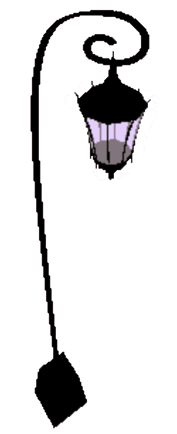
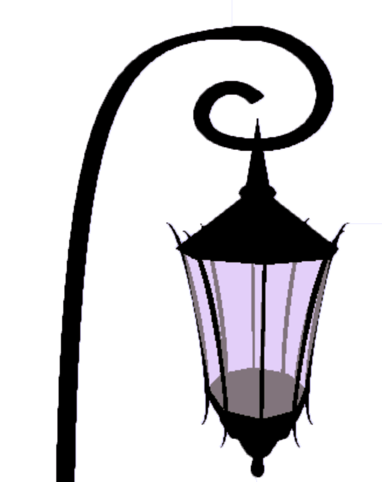
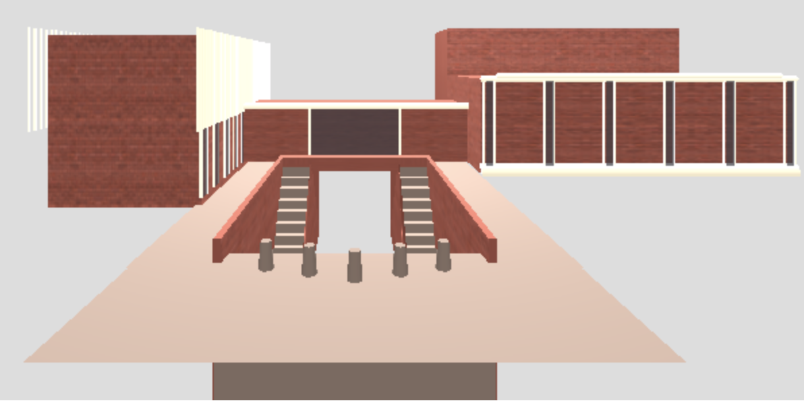
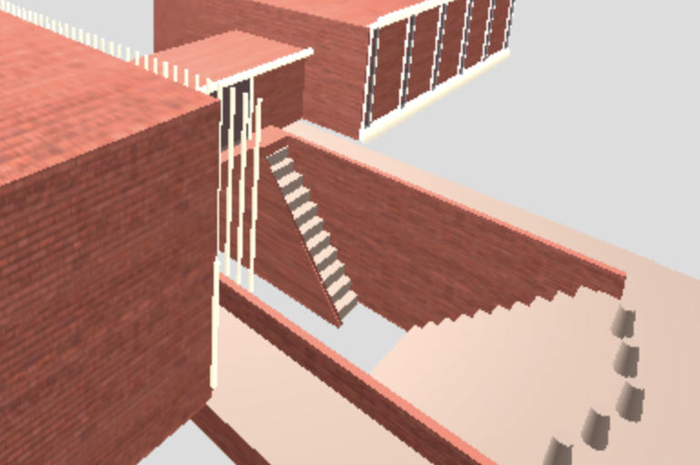
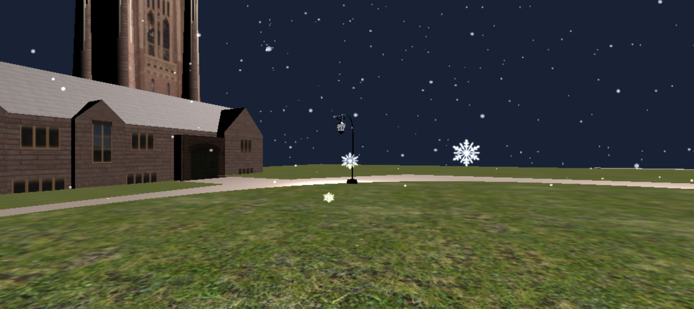

We built a graphics rendering of the Academic Quad for our final project!
We built each building in its own JS file, along with a separate file for the lamps,
and then loaded all the files into the demo.
Initial Plan
We were initially planning to construct an animated scene, inspired by the following
scene from the Disney film Tangled.
We wanted to do a Wellesley take on the scene, taking place on Lake Waban with
our Wellesley lamps floating around the scene instead of the paper lanterns used in
the film. We were hoping to create both an animation (which runs in a standard fashion when the user presses space)
or something of that sort, as well as an interactive element for users, where they might be able
to click on a particular lamp/lantern and send it floating in a random direction.
However, after sitting with the idea for a bit, we realized it would be a bit
difficult to implement and also that it might look odd, since we wanted to use
texture mapping to recreate campus elements like the Lake but then wouldn't be able
to animate it with natural looking movement.
Change in Direction
We had built the Wellesley lamp for our HWK6 assignment, and decided we could try
to recreate a section of the campus and do a virtual "tour" of it.
We eventually settled on the Academic Quad because of its unique contained
nature, and also because of the variation in gothic and modern styles of architecture -
which would allow us to explore our skills in object building and show off
all the skills we learned in CS 307!
The Iconic Wellesley Lamps
The first thing we created for this project was the Wellesley lamp.

Here is an image of the lamp from aerial perspective.
We used hierarchical modeling in making several different meshes to
create the actual lamp object, then another to create an object for the
pole, and finally one for the base before constructing a lampost object that
contained all these objects.

This image shows a close-up of the details of the lamp that took the
longest amount of time to perfect. We used several different objects to create the
unique shape of the Wellesley lamp, and also used bezier curves to create the pieces
that adorn the sides of the lamp as well as the spiral pole.
Jewett
Next, we created Jewett.

Here is an image of our Jewett rendering from the front view.
It is mainly built out of several box geometries, and there are several
tube geometries to form the vents on the left building. The 'windows' are
made out of tube geometries surrounding transparent plane geometries.

The most challenging part of Jewett was definitely the lower
area with the staircases. We used the technique we learned in creating
fences, looping through and creating a new stair and translating it a bit
more each time. The inner walls of the staircases are trapezoidal in shape,
made by heavily compressing a cylinder geometry.
Green Hall
Next, we worked on Green Hall.
Here is an image of our interpretation of Green Hall from the top.
It is mainly built out of several barn geometries piercing through a central
barn, with two other larger barns on each side. Galen Stone Tower is built out
a box geometry with a boxy cylinder geometry attached to each corner.
One of the more challenging parts of creating the geometry was
texture mapping throughout. We had to carefully map specific parts of the barn
geometry to particular material indices, similar to how we completed HWK5, in
order to create the brick texture and the roof texture. We used a similar technique to
the stairs to create the windows with texture mapped plane geometries. We also texture mapped
the pattern of the tower onto each side of the box geometry, and added tubes to
integrate the flat texture and the 3D rendering. The door is also texture mapped
and we used blending to achieve the look.
Pendleton East & West
Next, we worked on Pendleton East and West.
This is a front view of Pendleton East and Pendleton West.
Pendleton East is made of many BarnGeometry meshes of varying sizes.
There are also BoxGeometry meshes for details around the border and in
front the main entrance, as well as PlaneGeometry meshes for the windows
and door. All the geometries have been texture mapped.
Pendleton West, which is more modern in design, is made
primarily of BoxGeometry meshes. The rightmost section of Pendleton West,
which connects directly to Pendleton East, contains many box geometries
stacked together to form the inner "cave" where the entrance is located.
There is even a small bench for sitting! The modern windows on the
newer sections of PNW were created by looping, translating, and adding
"window bars" (BoxGeometry) positioned in front of a "glass" plane.
Final Additions
The final thing we added was GUI controls for a more interactive experience.
We used a technique very similar to the classwork in order to create
a snowfall effect. We had to modify it slightly to fit the size of our scene
and also generate natural-looking snowfalls repeatedly.
Next we created a nighttime version, which changed the lighting and colors.
In the night view, the background scene color is changed to be a night sky color, and
the ambient light is removed. The spotlight is turned up slightly so the buildings are

This image combines all the new features, the night view with the snow on.
Please navigate to our demo to see the GUI in action!